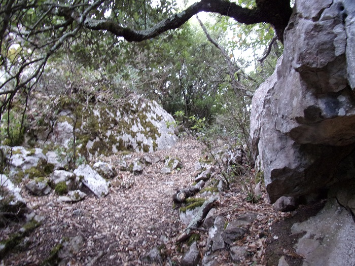

Depuis St Martin Lys, en passant par le Pas del Taïchou, en longeant les champs du Camp Grand, il est possible (difficilement aujourd'hui...) de rejoindre l'"ancien chemin de Quillan à Puilaurens" et ainsi de descendre dans le Fenouillèdes.
Le chemin de Lapradelle est tracé en bleu sur les 3 plans
Le premier est un gros plan pour montrer le chemin jusqu'au camp grant,
les 2 autres dessinent le trajet complet sur des supports de dates différentes
Cf le nom "révolutionnaire" de St Martin (de Taissac) sur la dernière.
C'est par ce chemin que sont arrivés les premiers habitants d'Artozoul, puis de la vallée de Saint Martin, suivis rapidement par les moines qui ont fondé l'abbaye.
Pendant de nombreuses années ce fut le seul accès possible à notre village.
Puis le commerce s'est établi vers l'aval de l'Aude, délaissant progressivement ces régions trop souvent en conflit avec la Catalogne ou l'Espagne.
Le Pas du Taïchou (blaireau en occitan) est le col permettant de passer d'un coté à l'autre du cap de fer et donc de basculer, en venant de St Martin, sur le camp grant. Ce "pas" se trouve à la limite nord du cap et surplombe St Martin.

Vues de St Martin depuis le Pas du Taïchou
Vue du col de Saint Martin depuis le Pas du Taïchou
C'est à ce point que se dressait la croix "immémorielle" contée à la page sur la croix. Cette croix aujourd'hui disparue se trouvait juste où est assise Mélissa...

Cette croix est décrite dans les termes suivants par l'abbé Utéza1 : "La croix qui est sur la montagne au levant, dite de Saint-Michel, en vue du village, en deçà de laquelle était la chapelle de Saint-Michel, où l'on trouva des ossements il y a deux ans, cette croix, de cœur de chêne, date d'un temps immémorial"
Mais le chemin, entre l'embranchement du chemin du col de Saint Martin et le haut du col du Taïchou, à flan du cap de fer, est difficilement praticable. En effet de nombreux éboulements ont emporté une grande partie de ce chemin.

Même si à certains de ces méandres un point de vue sur la vallée peut nous surprendre

Le chemin de Lapradelle en montant au dessus de St Martin
vue sur le chemin avant le Pas del Taïchou
Heureusement, grâce à l'entretien partiel par les chasseurs de Saint Martin jusqu'au point de vue du Pas del Taïchou et un peu après, il est encore possible de rejoindre Artosoul (en se frayant un passage entre les branches et les hautes herbes.
Le chemin de Lapradelle a été dégagé par les chasseurs au niveau du Pas du Taïchou
Mais la suite du chemin de Lapradelle, tout le long du Camp Grant est systématiquement occupée par de gros chênes verts, mais il est relativement aisé d'en suivre son ancien tracé car il longe la montagne et la friche d'herbes arrive souvent jusqu'à sa limite. Il est possible tout du long de voir les anciennes bergeries qui le bordaient, avec toutes, leur toit de tuiles effondré (mais qui restent en meilleur état que les anciennes bâtisses d'Artozoul...).
Une des bergeries du haut du Camp Grant en bordure du chemin de Lapradelle
Plus loin on rentre dans la forêt même et le tracé du chemin se devine plus par le dénivelé que par des restes de muret quasiment plus existants, mais il finit par déboucher sur la route des Fanges et se prolonge en la traversant par un chemin qui lui est resté entretenu.
1Courrier du 22 novembre 1838 à Jules Blancard repris dans Louis Amiel dans "Félix Armand, curé de Saint-Martin-Lys, sa vie et son œuvre"